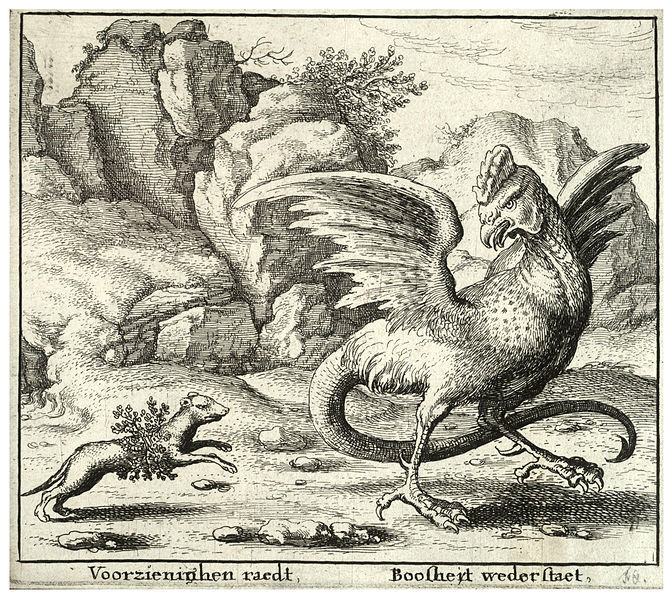
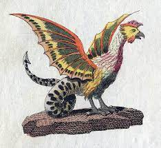
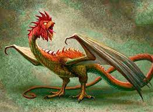
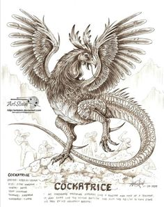

La cocatriz es una bestia mítica, esencialmente una criatura bípeda con apariencia de dragón o serpiente, con cabeza de gallo. Descrita por Laurence Breiner como "un ornamento en el drama y la poesía Isabelinas", ha estado presente prominentemente en el pensamiento y los mitos ingleses por siglos. Este autor refirió que "La cocatriz, que nadie vio, nació por accidente a finales del siglo XVI y murió a la mitad del siglo XVII, una víctima de la nueva ciencia".
De este ser, descrito por primera vez a finales del siglo XII, se encuentra una pista en la historia Natural de Plinio, como duplicado del basilisco o regulus. Pero a diferencia del basilisco, la cocatriz tiene alas. Sin embargo, la Enciclopedia Judía (1906) los considera idénticos. La cocatriz fue descrita por primera vez en la forma que actualmente se conoce a finales del siglo XIV.
El Diccionario Inglés de Oxford da una etimología del viejo francés cocatis, del latín medieval calcatrix, una traducción del griego ichneumon, con significado de rastreador. La leyenda del siglo XII está basada en una referencia de Pliny's Natural History en el que el ichneumon espera que el cocodrilo abra sus fauces para que el ave trochilus entre y le limpie los dientes. Una descripción más extensa de la cocatriz del siglo XV hecha por un viajero español en Egipto, Pedro Tafur, aclara que esta es una referencia al cocodrilo del Nilo.
De acuerdo con De naturis rerum (ca 1180) de Alexander Neckam, la cocatriz es producto de un huevo dejado por un gallo e incubado por un sapo; una serpiente es usada como sustituto en algunos versiones. La cocatriz se convierte en sinónimo de basilisco cuando "el basilisco" en De proprietatibus rerum (ca 1260) de Bartholomeus Anglicus fue traducido por John Trevisa como "cocatriz"(1397). Un basilisco, sin embargo, es usualmente descrito sin alas.
Se piensa que un huevo de gallo daría a luz a una cocatriz, y esto podría prevenirse arrojando el huevo sobre la casa de la familia, aterrizando en el otro lado de la casa, sin permitir que el huevo golpee la casa. Sin embargo, si bien existe una serie de criaturas de doble género, no existe un gallo macho conocido (que por definición se reproduce a través de espermatozoides), en tiempos antiguos o modernos, que tenga la capacidad exclusivamente femenina de producir huevos.
Tiene la capacidad de matar a la gente, ya sea mirándolos —"el ojo de la muerte de la cocatriz"— tocándolos o, a veces, respirando sobre ellos.
Se repetía en los bestiarios de finales de la Edad Media que la comadreja es el único animal que es inmune a la mirada de una cocatriz. También se pensó que una cocatriz moriría instantáneamente al oír el canto de un gallo y, según la leyenda, hacer que la cocatriz se vea a sí misma en un espejo es una de las pocas maneras de matarla.
También se dijo que la cocatriz volaba usando el conjunto de alas fijado a su espalda.
El primer uso de la palabra en inglés fue en la traducción 1382 de John Wyclif de la Biblia para traducir diferentes palabras hebreas. Este uso fue seguido por la versión King James, la palabra siendo utilizada varias veces. La versión revisada -siguiendo la tradición establecida por la basílica de Vulgata de Jerónimo- emplea la palabra "basilisco", y la Nueva Versión Internacional la traduce como "víbora". En Proverbios 23:32, la tzef'a hebrea menciona "sumador", tanto en la Versión Autorizada como en la Versión Revisada.
